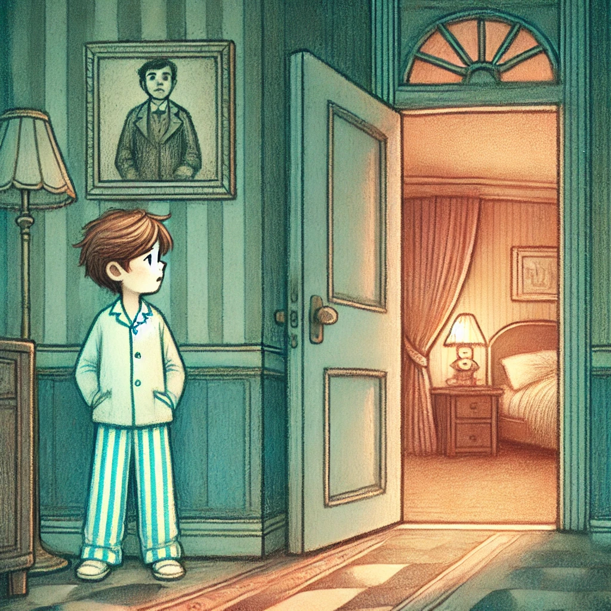

4. Dezember
Der Brief
Johann war nervös. Der Gedanke an den Mann vom Flughafen ließ ihm keine Ruhe, aber noch mehr beschäftigte ihn der Brief seines Onkels. Er hatte ihn tief unten in seiner Tasche versteckt, aber es fühlte sich an, als würde das Papier darin glühen und ihn ständig anziehen. Beim Abendessen in der kleinen Trattoria an einer belebten Piazza beschloss er, es seinen Eltern zu sagen.
„Mama, Papa, ich muss euch was erzählen,“ begann Johann zögerlich, während er sein Besteck zur Seite legte. Seine Eltern schauten ihn überrascht an. „Ich habe einen Brief bekommen. Von einem Onkel... aus Südamerika.“
Seine Mutter runzelte die Stirn. „Ein Onkel? Du hast keinen Onkel in Südamerika!“
„Er heißt Carlos,“ fuhr Johann fort. „Er sagt, er braucht meine Hilfe und dass ich zu ihm kommen soll.“
Sein Vater lehnte sich zurück und verschränkte die Arme. „Das klingt seltsam. Wo hast du den Brief bekommen?“
„Der Postbote hat ihn gebracht,“ erklärte Johann und zog das zerknitterte Papier aus seiner Tasche. Seine Mutter nahm es vorsichtig, überflog die Zeilen und reichte es dann seinem Vater weiter.
„Und was hast du damit gemacht?“ fragte sie.
Johann sah auf den Tisch. „Nichts. Ich wollte ihm schreiben, dass ich nicht kommen kann.“
Seine Eltern sahen sich an, ein unausgesprochenes Gespräch lief zwischen ihnen ab. Dann sagte sein Vater ernst: „Es könnte ein Scherz sein. Oder schlimmer, jemand versucht, dich in etwas hineinzuziehen. Du solltest mit solchen Dingen immer sofort zu uns kommen.“
Johann nickte schuldbewusst. Aber in seinem Inneren fragte er sich: Was ist, wenn Onkel Carlos wirklich in Schwierigkeiten ist? Und warum wirken Mama und Papa so nervös?
In der Nacht konnte Johann nicht schlafen. Der Mann, der Brief und die Reaktion seiner Eltern ließen ihm keine Ruhe. Schließlich beschloss er, zu ihnen ins Zimmer zu gehen. Vielleicht konnte er etwas Klarheit bekommen – oder zumindest die Gewissheit, dass sie alles unter Kontrolle hatten.
Barfuß und leise wie eine Katze schlich Johann durch den Flur. Doch bevor er die Tür zu ihren Eltern öffnete, hörte er ihre gedämpften Stimmen durch das Holz.
„Wir sind hier auch nicht sicher,“ flüsterte seine Mutter angespannt. „Es war eine dumme Idee, hierherzukommen! Zu Hause kennen wir uns aus, wissen, wer in der Nähe ist. Hier...“
„Zu Hause sind wir berechenbar,“ unterbrach sie sein Vater. „Das ist das Erste, was sie erwarten würden. Hier bleiben wir unvorhersehbar. Das ist unsere beste Chance.“
Johann konnte nicht glauben, was er hörte. Nicht sicher? Was hat das zu bedeuten? Sein Herz raste, und seine Gedanken wirbelten. Er hatte genug von den Andeutungen, vom Versteckspiel. Ohne weiter nachzudenken, drückte er die Tür auf.
Seine Eltern sahen ihn überrascht an, ihre Gesichter wie eingefroren.
„Ihr wisst etwas, was ich nicht weiß,“ platzte Johann heraus. „Es geht nicht nur um diesen Brief, oder? Und was meint ihr mit ‚nicht sicher‘?“
„Johann, das ist nicht der richtige Moment,“ begann seine Mutter, aber Johann ließ sich nicht bremsen.
„Was ist hier los?“
Sein Vater seufzte und stand auf. „Johann, du bist zu jung, um das alles zu verstehen...“
„Dann erklärt es mir!“
Die Spannung im Raum war fast greifbar. Nach einem langen Blickwechsel zwischen seinen Eltern sagte seine Mutter leise: „Es geht nicht nur um dich, Johann. Es gibt Dinge, die wir noch nicht vollständig verstehen. Aber wir versuchen, dich zu schützen. Wir können dir alles erzählen, wenn wir nach Hause kommen.“
„Nach Hause?“ Johann runzelte die Stirn.
„Ja,“ sagte sie entschieden. „Wir reisen morgen ab. Geh jetzt ins Bett.“
Was soll Johann tun?
- Recherchieren:Seine Eltern moechten ihm nicht sagen, was los ist, deshalb muss er es alleine herausfinden. Als erstes will er seinem Onkel schreiben.
- Abhauen: Sein Vater hat selbst gesagt, am sichersten ist er, wenn seine Handlungen nicht vorhersehbar sind, deshalb ist es besser, wenn er alleine aufbricht und irgendetwas willkuerliches macht.
- Seinen Eltern vertrauen: Johann entscheidet sich, seinen Eltern zu vertrauen und gemeinsam mit ihnen zurückzufliegen.